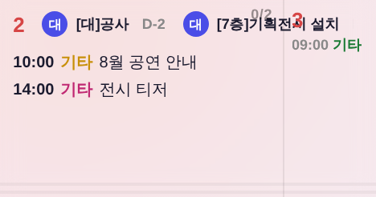
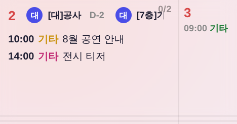
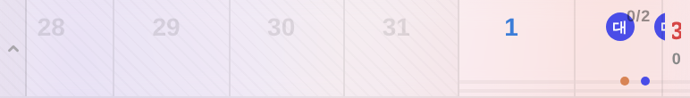
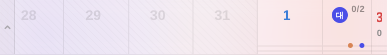

file://index.html에 2026-08 시드 주입 후 renderCal() 직접 호출) ·
측정 기준점 = 통합칸 좌변 · 월요일 서브셀 좌변(칸 폭의 75% 지점)
| 항목 | 전 | 후 |
|---|---|---|
| 월요일 서브셀 좌변(경계) | 175.38px | 175.38px |
일요일 날짜줄 .dn 우변 | 219.83px | 161.38px |
| 날짜줄 침범량(우변 − 경계) | +44.45px | −14.00px |
특별일정 .sp-area 우변 | 225.83px | 167.38px |
| 특별일정 침범량 | +50.45px | −8.00px |
일정 목록 .c-inner 우변(종전 정상) | 166.36px | 166.36px |
침범량 음수 = 경계 안쪽에서 끝남. 후 값 −14 / −8 = 일반 셀의 우측 여백(.dn 14px · .sp-area 8px)을 3/4 경계 기준으로 그대로 계승한 값.
일요일 칸은 우측 1/4이 월요일 서브셀(.mon-sub, 260706 운영자 확정)이라 일요일 내용은 3/4에서 끊겨야 한다.
일정 목록(.c.sunmon .c-inner{width:calc(75% - 5px)})과 카운트(.c-count)는 그 규칙이 있었는데,
절대배치로 셀 위에 얹히는 두 오버레이에만 없었다:
.dn(날짜 + 프로그램 배지) — setupCellOverlays()가 .c-inner 밖으로 꺼내 position:absolute; right:14px로 고정 → 칸 전체 폭을 먹었다..sp-area(담당자 특별일정 전광판) — CSS left:8px; right:8px → 마찬가지로 칸 전체 폭.
그래서 일요일에 프로그램·대관이 걸리면 배지 줄이 그대로 월요일 칸까지 흘러 월요일 날짜 숫자와 일정 위에 겹쳐 찍혔다
(첨부 화면의 「2 (대)공사 (대)[7층]기획…」이 「3」을 덮은 상태). .mon-sub 배경이 투명이라 가려주지도 못한다.
setupCellOverlays() — dn.style.right = 통합칸이면 'calc(25% + 14px)' : '14px'. 인라인 스타일이라 인라인으로 분기(기존 배치 코드 자리 그대로)..c.sunmon .sp-area{right:calc(25% + 8px)}를 기존 .c.sunmon 블록에 추가.신규 색·토큰·클래스 0(기존 .c.sunmon 3/4 규칙의 누락분 보충). 다음 달 일요일(nm)은 애초에 분할하지 않아 sunmon이 안 붙으므로 영향 없음.



전 — 배지가 월요일 「3」에 겹침
후 — 겹침 해소python3 tools/check_design.py — 통과(raw hex 1605/1605 · :root 2/0 · 신규 색·토큰 0)node tools/smoke_login.mjs — PASS(JS 회귀 0).dn 우측 여백 14px 무변 · 통합칸 .c-inner·.c-count·.cell-corner 무변renderExhibitBadge, left:0;right:0)은 그대로 뒀다. 이건 날짜 내용이 아니라 칸을 가로질러 이어지는 진행 막대라 끊으면 월요일 1/4에서 선이 사라진다 — 설계 판단이 필요해 손대지 않음..dn이 가운데 정렬이라 배지가 숫자를 밀어낸다. 별건이라 운영자 판단 대기.